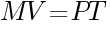
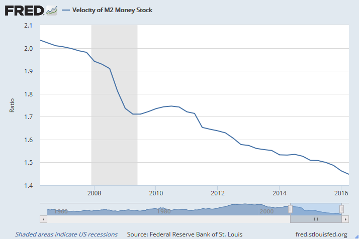

<!DOCTYPE html>
<html>
</html>
<head>
  <meta charset="utf-8">
  <meta http-equiv="X-UA-Compatible" content="IE=edge">
  <title>外汇站（fx-z.com） - 傻瓜式货币政策</title>
  <meta name="description" content="">
  <meta name="viewport" content="width=device-width, initial-scale=1">
  <meta name="robots" content="all,follow">
  <!-- Bootstrap CSS-->
  <link rel="stylesheet" href="vendor/bootstrap/css/bootstrap.min.css">
  <!-- Font Awesome CSS-->
  <link rel="stylesheet" href="vendor/font-awesome/css/font-awesome.min.css">
  <!-- Google fonts - Roboto-->
  <link rel="stylesheet" href="https://fonts.googleapis.com/css?family=Roboto:400,300,700,400italic">
  <!-- owl carousel-->
  <link rel="stylesheet" href="vendor/owl.carousel/assets/owl.carousel.css">
  <link rel="stylesheet" href="vendor/owl.carousel/assets/owl.theme.default.css">
  <!-- theme stylesheet-->
  <link rel="stylesheet" href="css/style.default.css" id="theme-stylesheet">
  <!-- Custom stylesheet - for your changes-->
  <link rel="stylesheet" href="css/custom.css">
  <!-- Favicon-->
  <link rel="shortcut icon" href="img/favicon.png">
  <!-- Tweaks for older IEs--><!--[if lt IE 9]>
    <script src="https://oss.maxcdn.com/html5shiv/3.7.3/html5shiv.min.js"></script>
    <script src="https://oss.maxcdn.com/respond/1.4.2/respond.min.js"></script><![endif]-->
</head>
<body>
  <div id="all">
    <div class="container-fluid">
      <div class="row row-offcanvas row-offcanvas-left"> 
        <!--   *** SIDEBAR ***-->
        <div id="sidebar" class="col-md-4 col-lg-3 sidebar-offcanvas">
          <div class="sidebar-content">
            <h1 class="sidebar-heading"> <a href="https://fx-z.com">fx-z.com</a></h1>
            <p class="sidebar-p">介绍外汇相关的基本知识，告诉您如何进行自己的技术面和基本面分析，讲解先进的交易理念，并且为您阐述失败交易者与专业交易者之间的真正区别。 </p>
            <p class="sidebar-p">通过这些课程的学习，您将学会如何根据自己的优势来应用情绪分析，还将了解真实世界的事件会对货币汇率产生什么影响，央行在外汇市场中所发挥的作用，以及交易者在颇受欢迎的即期外汇交易中有哪些选择方案。 </p>
            <ul class="sidebar-menu">
                <!-- Link-->
                <li class="sidebar-item"><a href="https://fx-z.com" class="sidebar-link">首页</a></li>
                <!-- Link-->
                <li class="sidebar-item"><a href="cihui.html" class="sidebar-link">外汇词汇</a></li>
                <!-- Link-->
                <li class="sidebar-item"><a href="ebook.html" class="sidebar-link">获取外汇电子书</a></li>
            </ul>
            <p class="social"><a href="https://www.cn-forextime.com/zh?partner_id=4920383" target="_blank"data-animate-hover="pulse" class="external facebook"><i class="fa fa-eur"></i></a><a href="https://www.cn-forextime.com/zh?partner_id=4920383" target="_blank" data-animate-hover="pulse" class="external gplus"><i class="fa fa-gbp"></i></a><a href="https://www.cn-forextime.com/zh?partner_id=4920383" target="_blank" data-animate-hover="pulse" class="external twitter"><i class="fa fa-rmb"></i></a><a href="https://www.cn-forextime.com/zh?partner_id=4920383" target="_blank" title="" class="external instagram"><i class="fa fa-dollar"></i></a><a href="https://www.cn-forextime.com/zh?partner_id=4920383" target="_blank" data-animate-hover="pulse" class="email"><i class="fa fa-money"></i></a></p>
            <div class="copyright text-center text-md-left">
             
              
            </div>
          </div>
        </div>
        <!--   *** SIDEBAR END ***  -->
        <!--   *** DETAIL ***-->
        <div class="col-md-8 col-lg-9 content-column white-background">
          <div class="small-navbar d-flex d-md-none">
            <button type="button" data-toggle="offcanvas" class="btn btn-outline-primary"> <i class="fa fa-align-left mr-2"></i>菜单</button>
            <h1 class="small-navbar-heading"> <a href="https://fx-z.com/11-3.html">下一篇 </a></h1>
          </div>
          <div class="row">
            <div class="col-xl-10">
              <div class="content-column-content">
                <h1>傻瓜式货币政策</h1>
    <p>
    各大主要央行的货币政策是引起外汇市场波动的最主要因素。反之，大多数货币政策受到通货膨胀的影响。
</p>
<p>
    您肯定听过一句话——“无论何时何地,通货膨胀都是一种货币政策现象”。这是经济学货币运动先驱 Milton Friedman 的著名论断。Friedman 扩大并细化了另一位芝加哥经济学教授 Irving Fisher 的早期成果。Fisher 提出了“交易方程式”理念，称货币供应量（M） 乘以货币流通速度（V）等于物价水平（P）乘以 社会总交易量 或 GDP（T）。货币主义的核心公式可简化为以下四个因素：
</p>
<p>
     
</p>
<p>
    例如：如果货币供应量 M 每年增长 10%，经济 T 每年增长 3%，那么为了使等式平衡，物价水平P 必须上涨。如果物价水平上涨，这会导致通胀。因此，虽然近年来其他因素颇为重要，我们仍要继续关注主要央行的货币供应量数据。
</p>
<p>
    有两个案例可说明虽然交易方程式是重言式，但它不能说明一切。
</p>
<p>
    例如，在欧洲央行早年间，欧洲央行曾公布货币供应量 M 以极高的速度（比如 7-9%）整月上涨，但人们对于通货膨胀的担忧并未成真。这是因为薪酬水平被压低，至少在主要经济体——德国是如此。物价水平 P 是指商品和服务的价格；它受到薪酬水平的影响较大。
</p>
<p>
    美联储于 2008 年通过用现金买入美国国债来开始量化宽松政策。它将现金输送至银行，而银行通常会将这些资金借出。但银行未能成功将资金借出，而是转身将它作为美联储的计息存款。所以，虽然货币供应量 M 确实大幅上升，但 V 或货币流通速度为零或负数，方程式真正的经济侧并未受到物价压力。许多分析师和评论家由于忽略货币流通速度而弄错了这一点，这实在令人惊讶。您可以查看以下由圣路易斯联储发布的图表；它将公布关于货币行情的有力数据及图表。无论您何时见到基于美国货币政策的可疑观点，如果分析师是在胡说八道，圣路易斯联储官网是您进行查证的最佳方式。
</p>
<p>
     2006 年至 2016 年间 M2 货币存量流通速度数据源：圣路易斯联储银行。
</p>
<p>
    <strong>为什么通货膨胀很重要</strong>
</p>
<p>
    正如影响货币汇率的因素一课中所述，通货膨胀之所以重要是因为，如果一个国家的成本结构变得高于贸易伙伴国的成本结构，则较为昂贵的国家将无法出口至贸易伙伴国——因为它的商品将被挤出贸易伙伴国的市场。为了恢复贸易竞争力，它必须让货币贬值或通过寻找更便宜的原材料、降低薪酬的方式来削减成本。
</p>
<p>
    寻找更便宜的原材料或其他成本优势应该是千百年以来殖民主义与各种抢地风潮背后的动机。由于控制成本这条路已经行不通，一个国家为了管理经济唯一能做的事情就是管理通货膨胀。除非它想控制薪酬和物价，货币政策才能成为有效工具。
</p>
<p>
    即使在最自由的市场经济体内，政府也需要对经济进行一定程度的管理，因为不这样做的话会带来可怕的后果——那些因通货膨胀而利益受损的人会大动干戈并且将政府推翻。如果您是一位囤够了粮食和养老钱的储蓄者，您的购买力将被通货膨胀所侵蚀。商人将囤积未来成本更高的货物，从而导致商品短缺。人们普遍认为，1921-1924 年德国恶性通货膨胀引起了民众的不满，从而导致纳粹崛起，以及德国由于一战后的赔偿要求（加上一个破产的政府）打击了其民族自尊心而开展的报复。
</p>
<p>
    <strong>预期的作用</strong>
</p>
<p>
    与许多其他经济指标公布的信息一样，通货膨胀最大的影响是预期，而不是所报道的数值，也不是预期数据与实际数据之间的差异。如果通货膨胀处于央行预期范围内较低的一侧，但突然大幅上升，那么人们认为央行将采取鹰牌基调。加息预期通常具有提振货币的效果（至少暂时有效）。所有货币均受到人们对下一次央行政策决策的预期的影响，而且这些决策被认为是主要建立在通货膨胀预期的基础之上。
</p>
<p>
    外汇分析师还关注产能过剩。这是指未使用的生产力，而且这些生产力最适合在制造业和其他产业应用（例如采矿、电力生产等）中测量。这似乎不属于货币政策，但如果我们回到 Fisher 方程式，我们会发现它属于方程式右侧的 T，即我们如今所说的 GDP。如果生产者按照最佳产能运营，他们将生产 100 台——但现在，他们只生产 70 台。多余的 30 台即产能过剩，而且产能严重过剩时（仅按照 70% 产能运营属于较为严重的情况），往往不会发生通货膨胀。案例分析：当澳大利亚大型自然资源公司宣布，由于预计中国市场以及其他新兴市场的需求降低，公司将削减对采矿业的资金投入（2013 年），澳元跟随降息预期下跌。这一切与通货膨胀毫无关系，而唯一相关的因素是关于产能过剩加剧的预期。
</p>
<p>
    <strong>泰勒规则</strong>
</p>
<p>
    为了理解央行的主要职责——即保持经济在没有通货膨胀的情况下稳步增长，您需要掌握泰勒规则。管理通货膨胀是欧洲央行的明确使命，而美联储还有另一件差事——即防止失业率过高。
</p>
<p>
    泰勒规则综合了通胀预期和产能过剩这两种观念。它由斯坦福大学经济学家 John Taylor 于 1993 年提出，并且被广泛接受、影响深远。泰勒规则提出，如果通货膨胀增长过快或产能增长过快导致产能过剩的状况无法缓解，央行为此调高或调低短期利息，那么央行此时制定的货币政策是最有效果的。失业率被用作产能过剩的代表。因此，最佳的货币政策应该让加息幅度大于预期的通胀涨幅。
</p>
<p>
    到目前为止，理论家提出的其他因素不止泰勒规则这一条，但核心理念万变不离其宗——即货币政策的职责是遏制通货膨胀，但不扼杀经济增长。泰勒规则不解决关于汇率水平的问题，但外汇交易者会迅速看到分歧所在。还是沿用上述澳元案例：矿业公司宣布削减资金投入计划意味着产能过剩加剧；大约在这一首轮冲击的一年后，对澳元影响最大的重要因素之一是就业率。如果就业率异常低，或至少低于预期，那么澳元将在听到降息的言论之后下跌。如果就业率强于预期，则澳元上涨，因为产能过剩的情况肯定有所缓解，从而使加息或将可期。请注意，我们追踪的并不是薪酬水平或真正的通胀因素——而是产能过剩的代表。正因如此，有些因素乍一看并不属于货币政策，但它可以被视为真正的货币政策因素。
</p>
<p>
    <br/>
</p>
<p>
    <br/>
</p>
              </div>
            </div>
          </div>
        </div>
      </div>
    </div>
  </div>
  <!-- JavaScript files-->
  <script src="vendor/jquery/jquery.min.js"></script>
  <script src="vendor/popper.js/umd/popper.min.js"> </script>
  <script src="vendor/bootstrap/js/bootstrap.min.js"></script>
  <script src="vendor/jquery.cookie/jquery.cookie.js"> </script>
  <script src="vendor/owl.carousel/owl.carousel.min.js"></script>
  <script src="vendor/masonry-layout/masonry.pkgd.min.js"></script>
  <script src="js/front.js"></script>
</body>